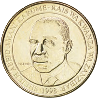
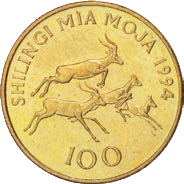
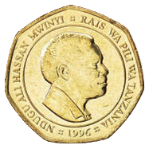
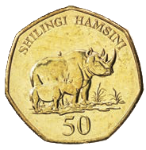

(b)

________ Shillings
(c)

________ Shillings
(d)


________ Shillings
1. What is the value of each Tanzanian coin? Write the answer in the blank space.
2.Which coin has the highest value?
3.Which coin has the lowest value?
4.Which coins have you ever seen before?
5.Which coins have you ever used before?